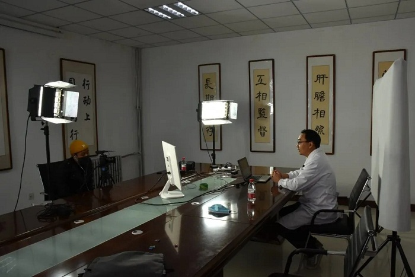
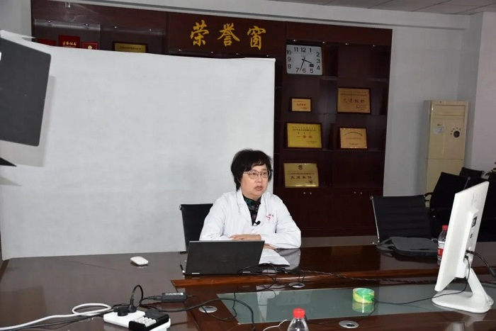
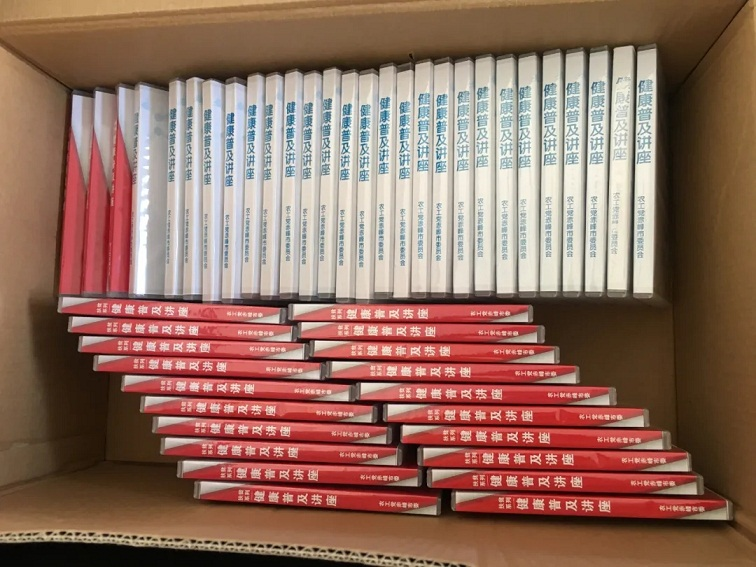

11月14至17日，农工党赤峰市委组织党内医疗专家利用周末及工作日下班时间，开展《健康普及讲座》第三套的录制。


来自市医院、赤峰学院附属医院、市传染病医院、市妇幼保健院、市安定医院等7家医疗机构的呼吸内科、传染科、肿瘤科、消化科、妇科、产科等科室的近20名党内医疗专家围绕“流行病与传染病的预防与治疗”主题，结合各自临床专业，以通俗易懂的方式，对自我保护、症状自检、治疗、康复方法等方面内容进行了生动详实的讲解。后期制作完成后，将通过网站、公众号等多种途径进行发布。针对部分群众存在不熟悉网络等情况，农工党赤峰市委还将视频刻录成光盘，免费赠送给有需要的群体。

2018-2020年，农工党赤峰市委连续三年制作《健康普及讲座》，旨在发挥农工党界别优势，帮助更多群众增加健康意识、树立“治未病”的理念，提升健康水平、提高生活质量，以实际行动助推“健康中国”建设。